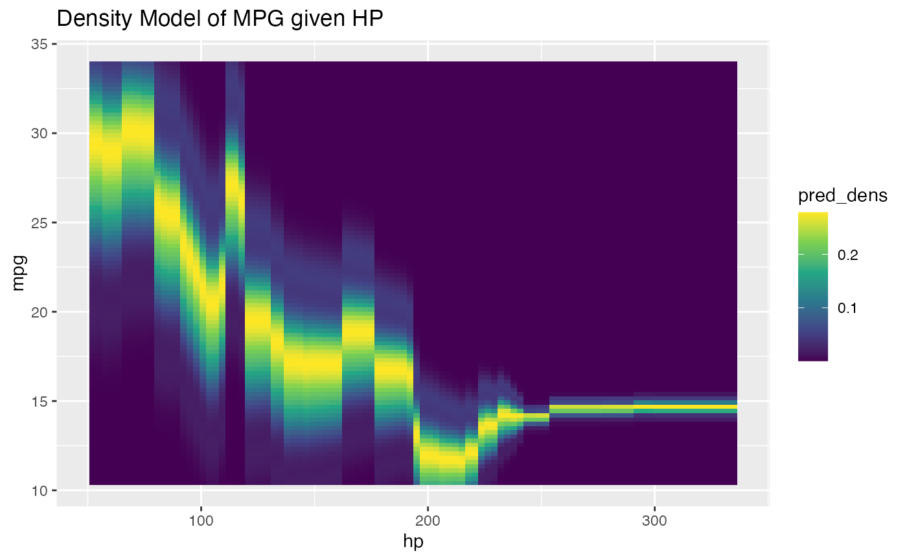

Conditional Density Estimation with Heteroskedasticity
Source:R/density_learners.R
lnr_heteroskedastic_density.RdConditional Density Estimation with Heteroskedasticity
Usage
lnr_heteroskedastic_density(
data,
formula,
mean_lnr,
var_lnr,
mean_lnr_args = NULL,
var_lnr_args = NULL,
density_args = NULL
)Arguments
- data
A dataframe to train a learner / learners on.
- formula
A regression formula to use inside this learner.
- mean_lnr
A learner (function) passed in to be trained on the data with the given formula and then used to predict conditional means for provided
newdata.- var_lnr
A learner (function) passed in to be trained on the squared error from the
mean_lnron the given data and then used to predict the expected variance for the density distribution of the outcome centered around the predicted conditional mean in the output.- mean_lnr_args
Extra arguments to be passed to the
mean_lnr- var_lnr_args
Extra arguments to be passed to the
var_lnr- density_args
Extra arguments to be passed to the kernel density smoother
stats::density, especially things likebwfor specifying the smoothing bandwidth. See?stats::density.
Value
a closure (function) that produces density estimates
at the newdata given according to the fit model.
Examples
# fit a conditional density model with mean model as a randomForest
fit_density_hetero <- lnr_heteroskedastic_density(
data = mtcars,
formula = mpg ~ hp,
mean_lnr = lnr_rf,
var_lnr = lnr_lm
)
# and what we should get back should be predicted densities at the
# observed mpg given the covariates hp
fit_density_hetero(mtcars)
#> [1] 0.2737488374 0.2737488374 0.2552800128 0.2784548357 0.2768739215
#> [6] 0.1944606196 0.1634484575 0.1179647282 0.2769081252 0.2754430567
#> [11] 0.2168234972 0.2707374743 0.2569484391 0.1985033293 0.1774818752
#> [16] 0.1806062644 0.0725975815 0.1686469651 0.2553640622 0.1113694601
#> [21] 0.2645709460 0.2124319471 0.1981865570 0.0097624908 0.2707629610
#> [26] 0.1903036391 0.2667279132 0.0698258512 0.0003124379 0.2340973101
#> [31] 0.0576213486 0.2783842729
if (requireNamespace("ggplot2", quietly = TRUE)) {
hp_grid <- with(mtcars, seq(min(hp), max(hp), length.out = 100))
mpg_grid <- with(mtcars, seq(min(mpg), max(mpg), length.out = 100))
mt_grid <- expand.grid(mpg = mpg_grid, hp = hp_grid)
plt_df <- cbind(mt_grid, pred_dens = fit_density_hetero(mt_grid))
require(ggplot2)
ggplot(plt_df, aes(x = hp, y = mpg, fill = pred_dens)) +
geom_tile() +
scale_fill_viridis_c() +
ggtitle("Density Model of MPG given HP")
}
#> Loading required package: ggplot2
#> Warning: package ‘ggplot2’ was built under R version 4.5.2
#> Keep up to date with changes at https://tidyverse.org/blog/
